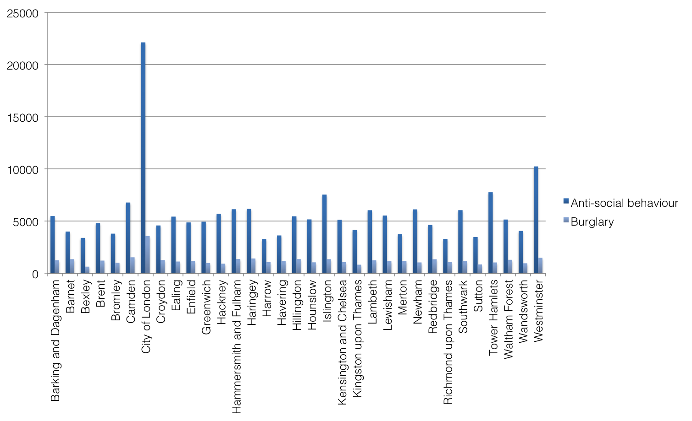

Alternative Denominators in Transport Crime
Reka Solymosi, Matt Ashby, Tom Cohen and Aiden Sidebottom
Overview
- Estimating crime risk
- The importance of choosing the right denominator
- The special case of transport crime
- Alternative transport crime denominators
- Consider the numerator
- Denominators from the census
- Denominators from the timetable
- Denominators from passenger surveys
- The availability - accuracy dilemma
- Lessons learned/ our contribution
- Future directions
Estimating crime risk - Crime counts v. crime rates
Crime volume is a basic indicator of the frequency of known criminal activity.
Crime rates are indicators of reported crime activity standardized by population.
Gower Street
Oxford Street
The right denominator - Crime rates v. crime rates
Choosing the right denominator to calculate crime rate is very important.
Numerator will determine best denominator.
The right denominator - Residential population
EThe right denominator - Daytime population

The right denominator - Alternative denominators
For alternative measure of population at risk, studies have explored modelling pedestrian movement (Chainey & Desyllas 2010), LandScan population distribution models (Andresen & Jenion 2008), time use surveys (Lemieux & Felson 2012), and mobile phone data (Bogomolov et al 2014).
The special case of crime on transport
Transit systems can act as crime generators and crime attractors, making transport a unique environment for crime (Smith & Clarke 2000).
Calculating risk requires measures of exposure to risk such as
- Journeys made
- Time on the system
- Length of different trip stages
- Passenger densities
- ...
Transport crime denominators - the role of the numerator
blah blah blah
Availability vs. validity
blah blah blah
Count of violent crimes, 2014
- Stratford
- Victoria
- King's Cross St Pancras
- Oxford Circus
- Bank/Monument
Residential population
- Heathrow Terminals 1,2,3 ⬆︎160
- Stratford
- North Greenwich
- Moor Park
- Epping
Transport crime denominators - timetable
blah blah blah
Transport crime denominators - passenger surveys
blah blah blah
Lessons Learned
To identify true crime hotspots we need to consider the right denominator for calculating crime rates, but this will depend on crime type, data availability, resources available for interpreting the data, ...
Denominators exist along an availability-accuracy spectrum, and there are limitations and benefits to using denominators from any point along this spectrum.
Next steps
Focus further on demographics to identify relative risks instead of risk based on general population.
Incorporate method for systematic inclusion of context through environmental backcloth where relevant as well (Newton 2008 v. LaVigne 1997).
References
Andresen, M. A., & Jenion, G. W. (2010). Ambient populations and the calculation of crime rates and risk. Security Journal, 23(2), 114-133.
Bogomolov, A., Lepri, B., Staiano, J., Oliver, N., Pianesi, F., & Pentland, A. (2014, November). Once upon a crime: Towards crime prediction from demographics and mobile data. In Proceedings of the 16th International Conference on Multimodal Interaction (pp. 427-434). ACM.
Chainey, S., & Desyllas, J. (2010). Modelling pedestrian movement to measure on-street crime risk. Movement-Aware Applications for Sustainable Mobility: Technologies and Approaches: Technologies and Approaches, 243.
La Vigne, N. G. (1997). Visibility and vigilance: Metro's situational approach to preventing subway crime (p. 20). US Department of Justice, Office of Justice Programs, National Institute of Justice.
Lemieux, A. M., & Felson, M. (2012). Risk of violent crime victimization during major daily activities. Violence and victims, 27(5), 635-655.
Newton, Andrew D. (2008) A Study of Bus Route Crime Risk in Urban Areas: The Changing Environs of a Bus Journey. Built Environment, 34 (1). pp. 88-103.
Smith, M. J., & Clarke, R. V. (2000). Crime and public transport. Crime and Justice, 169-233.